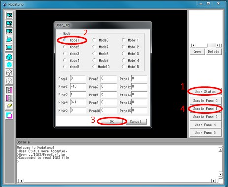
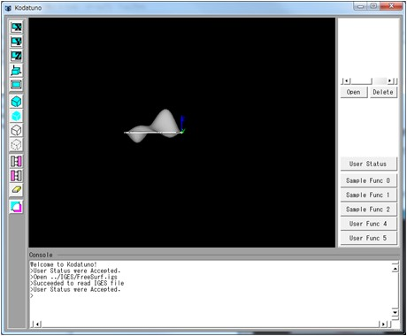

(Ex. 1) IGESファイルの読み込みとBodyへの登録
先ほどはメイン画面の"Open"ボタンからIGESファイルを読み込みましたが，ユーザー定義関数内でも同様の操作が可能です．
ユーザー定義関数内でIGESファイルを読み込み，それをBodyとして登録することによってそのIGESデータが認識され，グラフィック描画されます．
"SampleFunc1.cpp"のSmpRegistBody()を実行します．
＜実行手順＞
- Kodatunoアプリケーションを起動し, "User Status"からMode1を選択し，"Sample Func 1"ボタンを押します．

- Bodyが1つ表示されたことを確認してください．

＜ソース解説＞
今回はユーザー用ボタンの2つ目，"Sample Func 1"を押しました．これはUSERクラスのコンストラクタ(UserFunc.cpp )にあるExecSampleFunc1()が実行されたことを意味します．
// Userボタン登録関数1の実体を記述
// *BodyList:BODYの実体が登録順にリストされている
// *ObjList:セレクションされたエンティティ情報
// PickCount:セレクションされたエンティティの数
int USER::ExecSampleFunc1(BODYList *BodyList,OBJECTList *ObjList,int pickcount)
{
// User StatusのModeによって処理を分ける
if(UserStat.Mode == 0){
SmpRegistBody(BodyList,ObjList); // IGESファイルを読み込み，Bodyとして登録する
return KOD_TRUE;
}
else if(UserStat.Mode == 1){
SmpTransBody(BodyList,ObjList,pickcount,UserStat.Prop); // 指定したBodyに対しアフィン変換を行う
return KOD_TRUE;
}
else if(UserStat.Mode == 2){
SmpDivCurves(BodyList,ObjList,pickcount,UserStat.Prop); // 曲線を指定した分割数で分割した点を生成する
return KOD_TRUE;
}
else if(UserStat.Mode == 3){
SmpNearestPt(BodyList,ObjList,pickcount,UserStat.Prop); // 任意の点からの曲面上の最近傍点を求める
return KOD_TRUE;
}
else if(UserStat.Mode == 4){
SmpUVDivLine(BodyList,ObjList,pickcount,UserStat.Prop); // 曲面のUVパラメータで等間隔に分割した点を生成する
return KOD_TRUE;
}
else{
// void
return KOD_FALSE;
}
}
SampleFunc0でも述べたように，引数は固定です．この関数内では"User Status"のMode番号によって実行される関数が変わるようなコーディングを行っています．
今回はMode1選択しました．これによってUserStat.Modeに0が代入されますので，9行目のSmpRegistBody()関数が実行されます．
では，SmpRegistBody()を見てみましょう．
// Sample1: IGESファイルを読み込み，Bodyとして登録する
int SmpRegistBody(BODYList *BodyList,OBJECTList *ObjList)
{
char fname[256] = "../../../Model/IGES/FreeSurf.igs"; // ここではファイル名は決め打ちとする
IGES_PARSER Iges; // IGESファイルを読み込むためのクラスを呼び出す
BODY *body = new BODY; // 読み込んだIGESデータを格納するための箱(BODY)を用意
int flag = Iges.IGES_Parser_Main(body,fname); // IGESデータを読み込んで、bodyに格納
if(flag == KOD_TRUE){ // 読み込み成功なら
Iges.Optimize4OpenGL(body); // 読み込んだIGESファイルをOpenGL用に最適化する(必ずこの関数を実行してください)
GuiIF.SetMessage("Succeeded to read IGES file");
}
else{ // 読み込みに失敗したら
delete body; // 確保したメモリーを解放し
GuiIF.SetMessage("Error: fail to read IGES file");
return KOD_ERR; // 終了
}
body->RegistBody(BodyList,fname); // Bodyをリストに登録
// 読み込んだBODYを消去する場合は以下を実行
//body->DeleteBody(BodyList); // Bodyをリストからはずす
//delete body; // Body自身のメモリー解放
return KOD_TRUE;
}
今回の例では，読み込むファイル名は4行目に示すように，決め打ちしています．
このファイル名を持ったIGESファイルを実際に読み込むために，IGES_PARSERクラスを呼び出す必要があります(5行目)．
さらに，読み込んだIGESデータをBodyとして新たに登録するため，BODYクラスの実体を1つ用意します(6行目)．
実際のIGESファイル読み込みは8行目で，IGESクラスのIGES_Parser_Main()関数を呼び出すことによって行われます．
IGESデータはそれを生成するCADソフトに依存した方言があり，そのままの形でOpenGLの描画関数に渡すと正しく表示されない場合があります．
そこで，10行目のIGES_PARSER::Optimize4OpenGL()関数を呼び出し，OpenGLの仕様に沿ったデータ構造へとIGESデータを変更する必要があります．
もちろんこの関数によって3D形状が変化するようなことはないはずですが，意図しない描画となってしまう場合はご一報ください．
ここまでで，IGESデータを読み込み，それを新たなBodyとして登録できたわけですが，これだけではグラフィック領域に描画されません．
1.3 Kodatuno内部表現の概要で示したように，新たに生成したBodyはBODYListと呼ばれるリストに登録しなければいけません．
Kodatunoの描画関数はこのリストを辿りながらBodyを順番に描画していくようになっています．そこで，19行目のbody->RegistBody()関数を実行し，今生成したBody
をリストに登録します．
逆にBodyを消去する方法もここで説明しておきます．
Bodyの消去は22, 23行目にコメントとして示しておきました．基本的には読み込みの逆順を辿ればよく，まずbody->DeleteBody()によってBodyをリストからはずし，(22行目)，
自分で確保したBODY型のメモリーも消去(23行目)します．
以上で(Ex. 1)の解説を終了します．次は読み込んだBodyに対して平行・回転・拡大・縮小などのアフィン変換を行う方法について解説します．